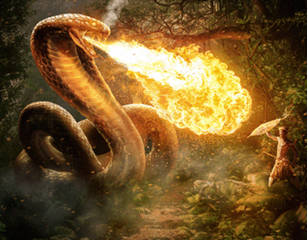

O folclore brasileiro é uma cultura popular brasileira, que representa a identidade social da comunidade através de suas criações culturais, coletivas ou individuais; é também uma parte essencial da cultura do Brasil.
Lenda do Saci-pererê
Nome de origem tupi-guarani, o Saci-pererê é uma das lendas brasileiras mais conhecidas. É representada por um menino negro que possui uma perna só. Além disso, fuma cachimbo e usa uma carapuça vermelha que lhe dá poderes mágicos.
Muito brincalhão e travesso, o Saci surge como um redemoinho e gosta de assustar pessoas. Embora o Saci-pererê seja o mais conhecido, existem três tipos de saci: O Pererê, o Trique e o Saçurá.
Lenda do Curupira
Personagem travesso do folclore brasileiro, o Curupira é a representação de um menino com cabelos vermelhos e pés virados para trás. A origem do nome é tupi-guarani e significa "corpo de menino".
Protetor da fauna e da flora, o Curupira assobia e deixa pegadas com seus pés virados. O objetivo é enganar os exploradores e destruidores da natureza.
Lenda da Mula sem Cabeça
A mula sem cabeça é um monstro do folclore brasileiro que se manifesta quando uma mulher namora um padre. Por maldição ela é transformada em mula.
Esta personagem folclórica é representada, literalmente, por uma mula sem cabeça, que solta fogo pelo pescoço e assusta pessoas e animais. No entanto, há versões que variam de região para região do Brasil.
Lenda do Lobisomem
A lenda do Lobisomem tem origem europeia. Ela retrata um monstro violento com formas humanas e de lobo, que se alimenta de sangue. Acredita-se que quando uma mulher tem sete filhas e o oitavo filho é homem, esse último provavelmente será um Lobisomem.
Em algumas versões, a lenda apresenta outras características, como a manifestação do Lobisomem em crianças não batizadas.
A transformação do homem em Lobisomem ocorre nas encruzilhadas em noites de lua cheia por volta da meia-noite. Ao amanhecer, ele torna-se novamente humano.
Lenda do Boitatá

O Boitatá é uma lenda folclórica conhecida em outras regiões do Brasil pelos nomes Baitatá, Biatatá, Bitatá e Batatão.Na língua indígena Tupi-Guarani significa "cobra de fogo". Esse personagem folclórico é representado por uma grande serpente de fogo que protege os animais e as matas.
Originalmente foi encontrado num texto do século XVI do Jesuíta José de Anchieta. Sua narrativa sofreu muitas modificações ao longo do tempo, de modo que existem diversas versões conforme a região do país.
Lenda do Boto
A lenda do Boto é originária da região amazônica sendo também conhecida pela denominação "boto cor-de-rosa" ou "Uauiará". Reza a lenda que nas noites de Festas Juninas, o boto, animal dos rios da Amazônia, sai dos rios e transforma-se num homem muito atraente. Seu objetivo é atrair e seduzir as mulheres para levá-las ao fundo dos rios e acasalar. Por este motivo, a cultura amazônica costuma afirmar que o boto é o pai de todos os filhos de origem desconhecida.
Lenda da Cuca
De origem portuguesa, a lenda da Cuca está associada muitas vezes com o “bicho papão”. Ela é uma personagem muito temida pelas crianças, representada por velha feia e malvada com cara de jacaré que raramente dorme.
Sua personagem está associada com o rapto de crianças desobedientes e que não querem dormir. Por isso, a tradicional cantiga de ninar crianças diz: “Nana neném que a Cuca vem pegar”.
Lenda do Negrinho do Pastoreio
De origem afro-cristã e pertencente ao folclore do sul do país, o Negrinho do Pastoreio conta a história de um menino escravo que tinha um patrão maldoso. Quando foi pastorear os cavalos, acabou por perder um cavalo baio.Depois de ter sido violentamente agredido pelo fazendeiro e jogado num formigueiro, o Negrinho do pastoreio aparece sem marcas no corpo. Ele surge ao lado da Virgem Maria e montado no cavalo baio. Muitas vezes as pessoas que perderam algum objeto acendem uma vela e pedem para o Negrinho os ajudar a encontrar.